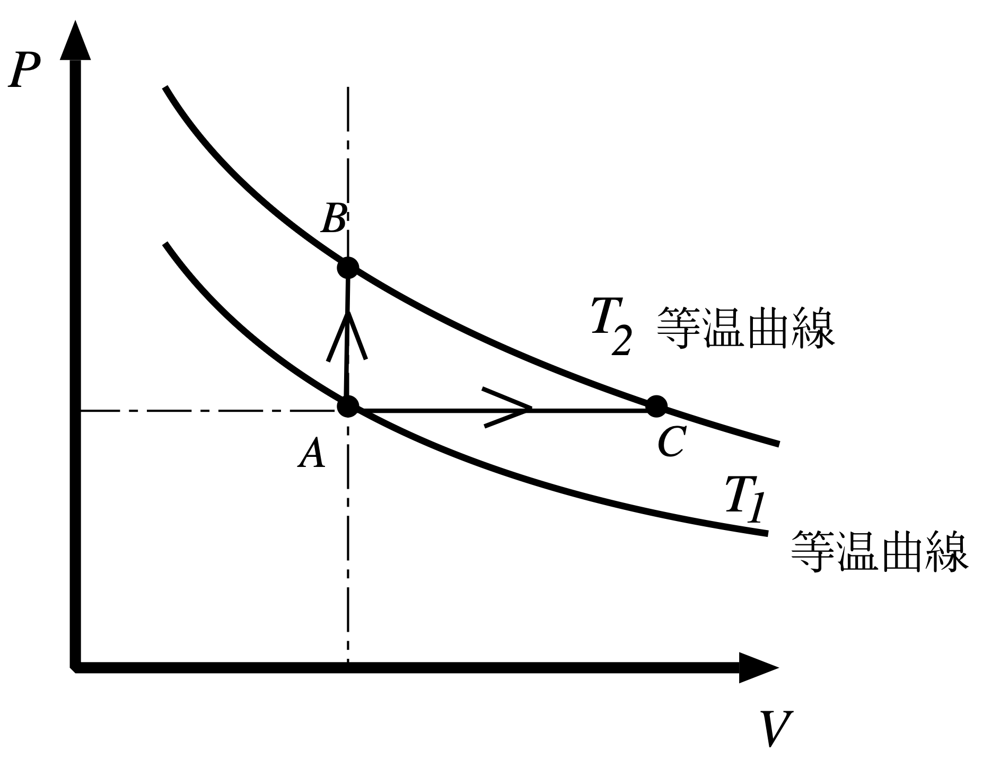

2014年度期末試験
一般の気体からなる系の熱力学に関する次の問いに答えよ。
圧力 $P$，温度 $T$，体積 $V$，内部エネルギー $U$ としたとき，定積熱容量 $C_V$ と定圧熱容量 $C_P$ には，
の関係があることを熱力学の法則から説明せよ。
内部エネルギーを $T,V$ の関数とみて全微分すると
（定積熱容量の定義 $C_V\equiv\pd{U}{T}{V}$ を用いた）。熱力学第一法則 $dU=δQ-PdV$（気体が準静的に外部にする仕事は $PdV$）より $δQ=dU+PdV$ なので，これに上式を代入すると
この式を，圧力 $P$ を一定に保ったまま温度を $dT$ だけ変える過程に適用する。このとき $dV=\pd{V}{T}{P}dT$ なので，
定圧熱容量は定義より $C_P\equiv\left.\dfrac{δQ}{dT}\right|_P$ なので，両辺を $dT$ で割ると求める関係式が得られる：
この式は熱力学第一法則（エネルギー保存）だけから出てくる一般的な恒等式であり，特定の状態方程式を仮定していない。右辺の中括弧の中身 $\left[\pd{U}{V}{T}+P\right]$ は「体積を等温的に $dV$ だけ増やしたときに，内部エネルギーの変化を補って外部に仕事もするために必要な熱量」の意味を持ち，理想気体では $\pd{U}{V}{T}=0$（第4章）なのでこの項は $P$ だけが残り，よく知られた $C_P=C_V+P\pd{V}{T}{P}=C_V+nR$（理想気体）に帰着する。
温度 $T_1$ と $T_2(<T_1)$ の二つの熱浴を使って，ある気体を作業物質としてCarnotサイクルを実行する。圧力 $P$，体積 $V$ の平面でCarnotサイクルの過程の概略を図示し，説明せよ。
Carnotサイクルは，作業物質の種類によらず，次の4過程を組み合わせて構成される：
サイクル全体を時計回りにたどると，正味の仕事 $W=Q_1-Q_2\,(>0)$ を外部に取り出す熱機関になる。ただし，$P$–$V$ 平面上の曲線形は状態方程式を指定しなければ一意に決まらない。上図では形を恣意的に描かず，代表例として単原子理想気体の式 $P=T/V$，$PV^{5/3}=\mathrm{const.}$ から数値生成している。
温度 $T$，エントロピー $S$ の平面でCarnotサイクルの過程の概略を図示せよ。
準静的（可逆）な断熱過程では $δQ=0$ かつ $dS=δQ/T=0$ なので，$T$–$S$ 平面では必ず垂直線（$S=$一定）になる。等温過程は文字通り水平線（$T=$一定）である。したがって高温 $T_1$・低温 $T_2$ の2本の水平線と，それをつなぐ2本の垂直線からなる長方形が，Carnotサイクルの $T$–$S$ 平面での姿になる。これは$P$–$V$ 平面での複雑な曲線群（動作物質の状態方程式に依存する）とは対照的に，常に長方形という非常に単純な普遍的な形になる点が特徴である。
二つのサイクル図において，サイクル過程によって囲まれた領域の面積が等しいことを説明せよ。
$P$–$V$ 平面で閉曲線に囲まれた面積は $\oint P\,dV$ である。一方，$T$–$S$ 平面で閉曲線に囲まれた面積は $\oint T\,dS$ である。この二つが等しいことを示せばよい。
サイクルを1周する間，内部エネルギー $U$ は状態量なので出発点に戻れば元の値に戻り，$\oint dU=0$。第一法則 $dU=δQ-PdV$ を1周積分すると
また，可逆過程では $δQ=TdS$ なので $\oint δQ=\oint TdS$。ゆえに
すなわち，$P$–$V$ 平面での囲み面積と $T$–$S$ 平面での囲み面積は，どちらも同じ量（サイクル1周で気体が外部にする正味の仕事 $W$，あるいは同じことだが正味の吸熱 $Q_1-Q_2$）に等しく，したがって二つの面積は等しい。
温度が $T_1$ と $T_2$ の熱浴の元で実現されるサイクルの中で，Carnotサイクルよりも熱効率の悪いサイクルは不可逆サイクルであることを示せ。
温度 $T_1>T_2$ の二つの熱浴の間で働く任意のサイクル $X$ を考え，その熱効率を $\eta_X=W_X/Q_1^X$（$Q_1^X$：高温熱浴から吸収する熱，$W_X$：正味の仕事）とする。Carnotサイクルの効率を $\eta_C=1-T_2/T_1$ とし，$\eta_X<\eta_C$ が成り立っているとする。ここで背理法を用いる：もし $X$ が可逆サイクルだと仮定すると矛盾が生じることを示す。
$X$ が可逆だと仮定すると，$X$ を逆回転（冷凍機として）動かすことができる。$X$ を順方向に1回動かして得られる仕事 $W_X$ を，Carnotサイクルを逆転させた冷凍機を駆動するのに使う。Carnot冷凍機は仕事 $W_X$ を使って低温熱浴 $T_2$ から熱 $Q_2^C$ を吸い上げ，高温熱浴 $T_1$ に $Q_1^C=Q_2^C+W_X$ を放出する。Carnotサイクルの定義より $W_X/Q_1^C=\eta_C$，すなわち $Q_1^C=W_X/\eta_C$。
$X$（順方向，高温から $Q_1^X=W_X/\eta_X$ を吸収）と Carnot冷凍機（逆方向，高温に $Q_1^C=W_X/\eta_C$ を放出）を組み合わせると，外部とやり取りする正味の仕事はちょうど相殺してゼロになる。このとき高温熱浴 $T_1$ に対する正味の熱の出入りは
仮定 $\eta_X<\eta_C$ より $1/\eta_X>1/\eta_C$ なので，この量は負——つまり高温熱浴 $T_1$ には熱が正味で流入する（$X$ が吸収した分より多い熱をCarnot冷凍機が返す）。エネルギー保存より，この分はすべて低温熱浴 $T_2$ から正味で吸い上げられている（低温熱浴からは正味で熱が減少する）。
結局，外部への正味の仕事がゼロのまま，低温熱浴 $T_2$ から熱を吸収し高温熱浴 $T_1$ へ渡す——すなわち低温から高温へ，他に何の変化も残さずに熱を移す過程が実現してしまう。これはClausiusの原理（＝Kelvinの原理と等価な，熱力学第二法則の表現の一つ）に反する。
したがって「$X$ が可逆である」という仮定が誤りであり，$X$ は不可逆でなければならない。□
Helmholtzの自由エネルギー $F=U-TS$ から導かれるMaxwell関係式を求めよ。
$F=U-TS$ の全微分を計算する。$dU=TdS-PdV$（第一法則＋可逆変化の第二法則）より
$F(T,V)$ として比較すると $\pd{F}{T}{V}=-S$，$\pd{F}{V}{T}=-P$。$F$ は状態量なので偏微分の順序を交換でき，
したがって $\pd{S}{V}{T}=\pd{P}{T}{V}$ が求めるMaxwell関係式である。
次の関係式（エネルギー方程式）が成り立つことを示せ。
$dU=TdS-PdV$ の両辺を，温度 $T$ を一定に保ったまま $V$ で偏微分すると
ここに(6)で求めたMaxwell関係式 $\pd{S}{V}{T}=\pd{P}{T}{V}$ を代入すると，求める式が得られる：
この「エネルギー方程式」は，内部エネルギーの体積依存性を，状態方程式 $P(T,V)$ だけから（実験でエントロピーを直接測らなくても）計算できることを意味する非常に重要な関係式である。理想気体 $P=nRT/V$ を代入すると $T\pd{P}{T}{V}-P=T\cdot\dfrac{nR}{V}-P=P-P=0$ となり，理想気体では $U$ が $V$ に依存しないという事実（Q1(1)の補足で触れた通り）がこの式から直ちに従う。
(5)で用いた「2つの温度の熱浴の間で働く可逆サイクルの効率は，動作物質によらずすべて等しい」という事実はCarnotの定理と呼ばれ，熱力学の理論体系の中でも特に重要な位置を占める。この定理があるからこそ，「2つの熱浴の温度の比 $T_2/T_1$」を，可逆機関の熱効率 $\eta=1-T_2/T_1$ という測定可能な力学量（仕事と熱の比）から定義することができる——これがまさに，特定の物質（水銀の膨張や気体の圧力など）に依存しない熱力学的絶対温度（Kelvin温度）の定義そのものである。逆に言えば，(5)で示したように「Carnotサイクルより効率の悪いサイクルは必ず不可逆」という事実は，Carnotサイクルが（同じ2つの熱浴の間で）最大効率を達成する特別な存在であることを保証しており，これによって絶対温度の定義が矛盾なく成り立つことが担保されている。
熱力学第二法則を表す表現は様々存在する。例えば，「Kelvinの原理」，「Clausiusの原理」，「Carnotサイクルの熱効率」，「Clausiusの不等式」，「エントロピー増大則」，「最大仕事の原理」などである。これらの中から3つを選び，その内容を簡潔に説明せよ。
Clausiusの不等式：任意のサイクル過程について $\oint\dfrac{δQ}{T}\le0$（等号は可逆サイクルのときのみ）。
エントロピー増大則：孤立系（外界と熱・仕事のやり取りが一切ない系）では，不可逆過程でエントロピーは必ず増加し，可逆過程では変化しない（$\Delta S\ge0$）。
最大仕事の原理：同じ始状態・終状態を結ぶ過程の中で，外部に取り出せる仕事（あるいは外部からされる仕事の絶対値）が最大（最小）になるのは，その過程を可逆的に行った場合である。
選択は自由なので，以下ではこの3つ（Clausiusの不等式 → エントロピー増大則 → 最大仕事の原理，という順に「一方からもう一方を導く」自然な流れになる組み合わせ）を採用し，(2)でその連鎖を証明する。以下では，選ばなかった残り3つの表現も含めて6つすべての内容を確認したうえで，なぜこの3つを選んだのか，他にどんな組み合わせが選べるのかを詳しく見る。
選ばなかった3つの表現
Kelvinの原理（Kelvin–Planckの表現）：一つの熱源だけから熱を吸収し，これを全て仕事に変換する——それ以外には系にも外界にも何の変化も残さない——ようなサイクル過程は存在しない，という主張。もしこれが可能なら，海水のような単一の巨大な熱浴から熱を汲み出し続けるだけで無尽蔵に仕事を取り出せる「第二種永久機関」が実現してしまう。第二法則は，仕事は熱源1つだけからは取り出せず，必ず高温熱源から低温熱源へ熱が流れる過程を伴わなければならない，と要請する。
Clausiusの原理：低温の物体から高温の物体へ熱を移す——それ以外には何の変化も残さない——ような過程は存在しない，という主張。すなわち，外部から仕事を加えることなしに，熱が低温から高温へ自発的に流れることはない。家庭用冷蔵庫やエアコンが，庫内（低温）の熱を室内（高温）へ排出するために必ず電力＝仕事の供給を必要とすることが，この原理の日常的な現れである。
Carnotサイクルの熱効率（Carnotの定理）：同じ2つの温度 $T_1$（高温），$T_2$（低温）の熱浴の間で働く可逆機関の熱効率は，動作物質や機構の詳細によらずすべて等しく $\eta=1-T_2/T_1$ で与えられ，かつ同じ2熱源間で働くいかなる熱機関（不可逆機関を含む）の効率も，この値を超えることはできない，という主張。可逆機関が「与えられた2熱源のもとで達成しうる最大効率」を実現するという意味で，これは（3つの中で唯一）具体的な数値を主張する定量的な表現になっている。
なぜClausiusの不等式・エントロピー増大則・最大仕事の原理を選んだか
この3つはいずれも「不等式」という代数的な形で書かれており，等号／不等号の向きを保ったまま式変形するだけで（場合分けや背理法を経由せずに）機械的に次の表現へ到達できる，という共通点がある——実際(2)の証明も，Clausiusの不等式に具体的な過程を代入する→得られた不等式を熱力学第一法則と組み合わせる，という2段階の計算だけで完結している。またこの3つは，(3)の $C_V>0$（熱的安定性）の議論や，大問3のエントロピー $S(U,V)$ を用いた計算問題のように，後続の設問で直接道具として使う場面が多く，本問全体の見通しがよくなるという実利的な理由もある。
他に選ぶとしたら：Kelvinの原理・Clausiusの原理・Carnotの定理
この3つは，多くの教科書がエントロピーを導入する前に第二法則の内容として最初に提示する，歴史的に最も古い「定性的」な組み合わせである。連鎖の証明は代数的な式変形ではなく，背理法（もし破れる過程があったら矛盾が生じる，と示す論法）による。
「Kelvinの原理 $\Rightarrow$ Clausiusの原理」：もしClausiusの原理が破れる装置（外部から仕事を受け取ることなく，低温熱源から高温熱源へ熱 $Q$ を移すだけの装置）があったとする。これと，高温熱源から熱を受け取り低温熱源に一部を捨てて仕事をする通常の可逆機関（Carnotサイクル）を組み合わせ，Carnotサイクルが低温熱源に捨てる熱をちょうど上の装置が高温熱源へ汲み上げる分に充てるように動かすと，全体として低温熱源は正味で熱の出入りがゼロになり，高温熱源からだけ正味の熱を吸収してそれを全て仕事に変える複合装置ができてしまう。これはKelvinの原理に反するので，Clausiusの原理が破れることはあり得ない。
「Clausiusの原理 $\Rightarrow$ Carnotの定理」：同じ2熱源間で働く2つの可逆機関Ⅰ・Ⅱの効率が異なる（$\eta_{\text{Ⅰ}}>\eta_{\text{Ⅱ}}$）と仮定する。効率の高いⅠを順方向（機関として），効率の低いⅡを逆方向（冷凍機として，Ⅰが生んだ仕事の一部を使って駆動）に組み合わせて動かすと，正味では外部との仕事の授受なしに，低温熱源から高温熱源へ熱が移動する複合装置ができてしまい，Clausiusの原理に反する。ゆえに $\eta_{\text{Ⅰ}}=\eta_{\text{Ⅱ}}$ でなければならず（可逆機関同士の効率は動作物質によらず一致する），同様の論法で不可逆機関の効率がこれを超えられないことも示せる——これがCarnotの定理である。
なお，Carnotの定理からClausiusの不等式を導くこと（任意のサイクルを無数の微小Carnotサイクルの重ね合わせとみなし，各微小サイクルにCarnotの定理を適用して足し合わせる）も標準的な教科書の流れであり，これによって「定性的な3つ」と「定量的な3つ」の輪もつながっている。つまり6つの表現は一直線に並ぶのではなく，互いに行き来できる1つの閉じた論理ネットワーク（輪）を成しており，本問はその輪の中から「隣り合っていて連鎖が示しやすい」3つを選ぶ問題になっている。
上に選んだ3つの法則について，一方からもう一方を導く証明を示せ。例えば，選んだ3つの法則をA,B,Cとすると，「AからB」を示し，「BからC」を示すこと。
「AからB」：Clausiusの不等式 $\Rightarrow$ エントロピー増大則
系が状態1から状態2へ，任意の（可逆でもよい）過程 I をたどり，その後，状態2から状態1へ可逆過程 II で戻る，という1つのサイクルを考える。Clausiusの不等式をこのサイクル全体に適用すると
過程IIは可逆なので $\displaystyle\int_{2\to1,\text{II}}\frac{δQ}{T}=S_1-S_2$（エントロピーは状態量であり，可逆経路に沿った $δQ/T$ の積分がエントロピー差そのものを与える）。代入すると
特に過程Iが断熱（$δQ=0$，孤立系での変化に相当）であれば，左辺はゼロなので $\Delta S\ge0$ が直ちに従う。すなわち，孤立系で起こる過程ではエントロピーは決して減少しない——これがエントロピー増大則である（過程Iが可逆なら等号，不可逆なら真に増加）。
「BからC」：エントロピー増大則 $\Rightarrow$ 最大仕事の原理
系を，温度 $T_0$ の単一の熱浴とだけ熱をやり取りしながら，状態1から状態2へ変化させ，その間に外部に仕事 $W$ を取り出すとする。第一法則より $Q=\Delta U+W$（$Q$：熱浴から系が吸収した熱，$\Delta U=U_2-U_1$）。
「系＋熱浴」を合わせた全体は孤立系とみなせるので，エントロピー増大則よりその合計のエントロピー変化は $\Delta S_{\text{全体}}=\Delta S_{\text{系}}+\Delta S_{\text{熱浴}}\ge0$。熱浴は温度 $T_0$ を保ったまま熱 $-Q$ を受け取るので $\Delta S_{\text{熱浴}}=-Q/T_0$。よって
これを $W=Q-\Delta U$ に代入すると
右辺は始状態・終状態だけで決まる定数であり，等号は $\Delta S_{\text{全体}}=0$，すなわち可逆過程のときにのみ成立する。したがって，同じ始状態・終状態を結ぶ過程の中で外部に取り出せる仕事は，可逆過程で行った場合に最大になる——これが最大仕事の原理である。□
一般の気体では，体積一定の条件でエントロピーは温度の単調関数であることを示し，熱力学第二法則との関係を論じよ。
体積一定（$dV=0$）のもとでは，第一法則より $δQ=dU=C_VdT$。可逆変化での第二法則の表現 $δQ=TdS$ と組み合わせると，定積過程では
絶対温度は常に $T>0$ なので，この式の符号は $C_V$ の符号だけで決まる。ここで熱力学第二法則（エントロピー増大則）の帰結として，安定な熱平衡状態では熱的安定性の条件 $C_V>0$ が要求される——もし $C_V<0$ の物質があったとすると，わずかにエネルギーが増えた部分は温度が下がり，より低温の周囲から自発的に熱が流れ込んでさらにエネルギーが増える，という暴走（正のフィードバック）が起こり，均一な平衡状態が保てなくなってしまう。エントロピーが平衡状態で極大値をとるという第二法則の要請（孤立系はエントロピーが最大の状態に向かう）が，この暴走を許さないことと数学的に同値であり，結果として $C_V>0$ が常に成り立つ。
以上より $T>0$ かつ $C_V>0$ なので $\pd{S}{T}{V}=C_V/T>0$——すなわち，体積一定のもとでエントロピーは温度の（狭義）単調増加関数である。これは特定の気体の性質ではなく，熱力学的に安定なあらゆる物質に共通する，第二法則そのものの帰結である。
$\pd{S}{T}{V}>0$ が常に成り立つという事実は，一見当たり前に思えるが，実務上は非常に重要である。例えば，気体の温度計や熱量測定では「エントロピー（あるいはそれに準ずる量）の値から温度を一意に決定できる」ことが暗黙に仮定されており，この単調性がその仮定を正当化している。また，統計力学でミクロカノニカル分布からエントロピー $S(U,V)$ を計算する際，$1/T=\pd{S}{U}{V}$ を通じて温度を定義できるのも，$S$ が $U$（したがって定積のもとでは $T$）の単調関数であることが背景にある——大問3で扱う光子気体でも，この単調性は $C_V=4BT^3V>0$ という形で確認できる（大問3(3)を参照）。
ある気体について，体積 $V$ と内部エネルギー $U$ の関数として，完全な熱力学関数であるエントロピー $S(U,V)$ が次のようにわかっているとする。
ここで，$A$ は正の定数である。以下の問いに答えよ。
$\pd{S}{U}{V}$ と $\pd{S}{U}{V}$ を計算せよ。
（原本の印刷では2つとも同じ $\left(\dfrac{\partial S}{\partial U}\right)_V$ と印字されており，明らかな誤植と判断される。以下では，意味が通る本来の設問——$\pd{S}{U}{V}$ と $\pd{S}{V}{U}$ を求めよ——として解答する。）
完全な熱力学関数 $S(U,V)$ の定義から，温度と圧力はそれぞれ $\dfrac1T=\pd{S}{U}{V}$，$\dfrac PT=\pd{S}{V}{U}$ で与えられる（$dS=\dfrac1TdU+\dfrac PTdV$ と比較すればよい）。与式 $S=AU^{3/4}V^{1/4}$ をそれぞれの変数で偏微分する。
この2つの式が，以降のすべての設問の出発点になる。
この気体の状態方程式を求めよ。
(1)の $\dfrac1T=\dfrac{3A}4U^{-\frac14}V^{\frac14}$ を $U$ について解く。以下，$B\equiv\left(\dfrac{3A}4\right)^4$ とおく。
次に圧力を求める。(1)の2式の比をとると（$U,V$ の関係だけから，$T$ に依存せず一般的に成り立つ関係が出る）
これに先ほどの $U=BT^4V$ を代入すると，$V$ がきれいに約分されて消える：
すなわち，この気体の圧力は体積によらず温度だけで決まる（$P=P(T)$）。これは通常の気体には見られない特異な性質である（補足参照）。
「エントロピーが $U,V$ だけの関数で，$U\propto VT^4$，圧力が体積によらず温度の4乗 $P\propto T^4$ で決まる」という性質は，光子気体（黒体輻射）の熱力学的性質そのものである。実際の黒体輻射では，エネルギー密度 $u=U/V=aT^4$（Stefan–Boltzmannの法則，$a$ は放射定数），輻射圧 $P=u/3=\frac13aT^4$ が成り立つことがよく知られており，本問の $B=\left(\frac{3A}4\right)^4$ が実質的にこの $a$ に対応している。以前の年度（2023・2025年度）の大問3が分子間力を考慮したファンデルワールス気体だったのに対し，2014年度は分子の数（光子数）が保存しない特殊な「気体」——光を閉じ込めた空洞の中の電磁波そのもの——を題材にしている点が対照的である。
この気体の熱容量を求めよ。定積熱容量でも定圧熱容量でもどちらでもよい。
(2)で求めた $U=BT^4V$（$B=(3A/4)^4$）を温度で偏微分するだけでよい。
設問は「定積・定圧どちらでもよい」としているが，実は定圧熱容量 $C_P$ はこの気体では定義できない——(2)で見た通り，圧力 $P$ はこの気体では温度だけの関数 $P=\frac B3T^4$ であり，体積 $V$ にはよらない。したがって「圧力を一定に保ったまま温度を変える」ことは，$P=\frac B3T^4$ の関係上，温度も一定に保つことと同義になってしまい，$dT\neq0$ かつ $dP=0$ を満たす過程はそもそも存在しない。ゆえに，答えられるのは事実上 $C_V$ のみである（この点は(6)でさらに詳しく検討する）。
圧力 $P$ は，$PV=\dfrac13U$ の関係を満たすことを示せ。
(2)の途中で，(1)の2式の比をとることで一般に $P=\dfrac{U}{3V}$（$T$ に依存しない，$U,V$ だけの恒等式）が成り立つことを示した。これは
という計算そのものであり，両辺に $V$ を掛ければ求める関係式 $PV=\dfrac13U$ が得られる。
この $PV=\frac13U$ という形は，実は $S=AU^aV^b$ というべき関数形の完全な熱力学関数であれば，指数 $a,b$ の値によらず一般に成り立つ関係 $PV=\dfrac{b}{a}U$ の一例になっている（ここでは $a=3/4,\,b=1/4$ なので $b/a=1/3$）。さらに，この気体のようにエントロピーが $U,V$ の完全に1次同次な関数である（$a+b=1$，実際 $\frac34+\frac14=1$）ことは，$U,S,V$ がいずれも示量変数（系を2倍にすればすべて2倍になる量）であるという物理的要請——光子数のような保存量を追加のパラメータとして持たない系（黒体輻射がまさにその例）に特有の制約——を反映している。
この気体の断熱曲線を求めよ。
可逆断熱過程は等エントロピー（$S=$一定）である。$S=AU^{3/4}V^{1/4}$ が一定ということは，$U^{3/4}V^{1/4}$ が一定，すなわち両辺を $4/3$ 乗して
これを温度 $T,V$ の関数として書き直す。(2)より $U=BT^4V$ なので，
両辺を $1/4$ 乗すると，断熱曲線が $T,V$ の関係として得られる：
これは通常の断熱曲線 $TV^{\gamma-1}=\text{const.}$（$\gamma=C_P/C_V$）の形と比較すると，指数が $\gamma-1=\frac13$，すなわち断熱指数 $\gamma=\dfrac43$ に相当する。これは，光子気体（超相対論的な粒子からなる気体一般）の断熱指数が $4/3$ になるという，統計力学でもよく知られた結果と完全に一致する（理想単原子分子気体の $\gamma=5/3$ より小さい）。圧力で表せば，$P=\frac B3T^4$（(2)）を使って $T\propto P^{1/4}$ に置き換えると $P^{1/4}V^{1/3}=\text{const.}$，4乗すれば $PV^{4/3}=\text{const.}$ という同値な表示も得られる。
この気体の温度を $T_1$ から $T_2$ にゆっくりと上げるときに，右図のように体積一定の過程（A→B）と圧力一定の過程（A→C）の二つの過程を行うとする。どちらの過程のエントロピー増加が大きいかを理由とともに答えよ。

この気体では圧力一定のまま温度を $T_1$ から $T_2$（$\neq T_1$）に変える過程はそもそも実現できない（(3)の補足の通り，$P$ は $T$ だけの関数のため）。したがって比較できるのは定積過程（A→B）のみであり，そのエントロピー増加は
$$\Delta S_{A\to B} = \frac{4B}3V_1\left(T_2^3-T_1^3\right) > 0 \qquad\left(B=\left(\tfrac{3A}4\right)^4,\ V_1:\text{Aの体積}\right)$$まず，$S$ を $T,V$ の関数として書き直しておく。$S=AU^{3/4}V^{1/4}$ に $U=BT^4V$（(2)）を代入すると
ここで $AB^{3/4}=A\left(\frac{3A}4\right)^3=\frac{4}{3}\cdot\frac{3A}4\left(\frac{3A}4\right)^3\cdot\frac1A\cdot A$ ……と煩雑になるので，直接 $\frac43B=\frac43\left(\frac{3A}4\right)^4$ と比較すると，$AB^{3/4}=\frac43B$ という単純な関係になっている（$B=(3A/4)^4$ のとき $A(3A/4)^3=\frac43\left(\frac{3A}4\right)^4/1$ を確かめればよい：$\frac43\cdot\frac{3A}4=A$ なので $\frac43\left(\frac{3A}4\right)^4=A\left(\frac{3A}4\right)^3$，確かに一致）。ゆえに
定積過程 A→B（$V=V_1$ 一定，$T_1\to T_2$）：
$T_2>T_1$（温度を上げる）なので，これは確かに正——エントロピーは増加する（(3)の $\pd ST V=C_V/T>0$ とも整合的）。
定圧過程 A→C（$P$ 一定，$T_1\to T_2$）について：
(2)で示した通り，この気体の圧力は $P=\dfrac B3T^4$ という，体積によらず温度だけで決まる量である。したがって，圧力 $P$ の値を指定した瞬間に，温度 $T=\left(\dfrac{3P}{B}\right)^{1/4}$ も一意に決まってしまう——体積 $V$ をどう変えても，圧力を固定したまま温度だけを変えることはできない。
すなわち「圧力を $P_A$（$=\frac B3T_1^4$）に固定したまま，温度を $T_1$ から $T_2\,(\neq T_1)$ へ変える」という過程 A→C は，この気体に関しては物理的に実現不可能である（もし本当に $P$ を $P_A$ に保つなら，温度は終始 $T_1$ のままでなければならず，点 C は結局，点 A と同じ等温線上（$T_1$ の等温線上）に留まってしまい，$T_2$ の等温線上の点にはなり得ない）。
これは，Q1(1)の一般公式 $C_P=C_V+\left[\pd UVT+P\right]\pd VTP$ を形式的にこの気体に当てはめようとすると，$\pd VTP$ が発散する（$P$ が $V$ に依存しないので $\pd PVT=0$ であり，陰関数の定理 $\pd VTP=-\pd PTV\big/\pd PVT$ の分母がゼロになるため）ことに対応しており，$C_P\to\infty$，すなわち「定圧で熱容量を測ろうとすると，無限小の熱で無限大のエントロピー変化が起きる（＝そもそも定圧で温度を変える過程が存在しない）」という結論と整合する。
したがって，この設問で well-defined に比較できるのは定積過程（A→B）だけであり，そのエントロピー増加は上記の $\Delta S_{A\to B}=\frac{4B}3V_1(T_2^3-T_1^3)>0$ である。
この気体が体積 $V_a$，温度 $T_a$ の平衡状態にある。その状態から体積を $V_b(>V_a)$ にゆっくりと膨張させて，最終状態の温度を $T_b$ となったとする。$T_a/T_b$ を求めよ。
「ゆっくりと膨張させる」は準静的過程を意味し，かつ他に熱源との接触が明記されていないので，(5)で求めた断熱曲線 $TV^{1/3}=\text{const.}$ に沿った可逆断熱過程として扱う（この解釈は，次の(8)で明示的に「真空への断熱膨張」という不可逆な対比が問われていることとも整合する——(7)はその可逆版にあたる）。
$V_b>V_a$ より右辺は $1$ より大きく，$T_a>T_b$：断熱膨張によってこの気体は冷える。膨張の程度に対して温度が下がる割合（指数 $1/3$）は，(5)で述べた断熱指数 $\gamma=4/3$（$\gamma-1=1/3$）にちょうど対応している。
この気体が体積 $V_a$，温度 $T_a$ の平衡状態にある。真空への断熱膨張をさせて，体積が $V_b'$ になったときの温度を $T_b'$ とすると，$T_a/T_b'$ を求めよ。
真空への自由膨張なので，押し返す相手がなく $δW=0$。断熱壁で囲われているので $δQ=0$。ゆえに第一法則より $\Delta U=0$：$U(T_a,V_a)=U(T_b',V_b')$。(2)の $U=BT^4V$ を用いると
$V_b'>V_a$ より $T_a>T_b'$：真空への自由膨張でもこの気体は冷える。ただし，(7)の可逆断熱膨張（同じ体積比なら $T_a/T_b=(V_b/V_a)^{1/3}$）と比べると，指数が $1/3$ から $1/4$ へ小さくなっており，同じ体積変化に対する温度低下は自由膨張の方が小さい（$1/4<1/3$ なので，同じ体積比 $V_b'/V_a=V_b/V_a>1$ に対して $(V_b'/V_a)^{1/4}<(V_b/V_a)^{1/3}$）。これは，自由膨張では外部に仕事をしない（膨張のエネルギーが丸ごと気体の内部に留まる）ため，仕事をしながら膨張する可逆断熱過程より冷え方が穏やかになる，という一般的な傾向と合致する。
エントロピー変化も確認しておく。$S=\frac{4B}3T^3V$（(6)の途中で導出）に代入すると
（$T_b'=T_a(V_a/V_b')^{1/4}$ を代入した）。ゆえに $\Delta S>0$：断熱かつ不可逆な自由膨張なので，エントロピー増大則と矛盾なく整合している。
本問で扱った「$P$ が $V$ によらず $T$ のみで決まる」「$C_P$ が定義できない（発散する）」という光子気体の性質は，単なる数学的な珍しさではなく，実際の物理現象——特に宇宙論——と直結している。宇宙初期は光子（および他の相対論的粒子）が支配的な放射優勢期であり，宇宙膨張はこの光子気体の可逆断熱膨張（(7)の関係）とみなせる。実際，宇宙のスケール因子を $R$（$V\propto R^3$ に相当）とすると，本問の関係 $TV^{1/3}=\text{const.}$ はちょうど $T\propto1/R$，すなわち「宇宙が膨張するにつれて，宇宙背景放射（CMB）の温度は膨張率に反比例して下がる」という，観測的にもよく確認されている法則そのものになっている。断熱指数 $\gamma=4/3$（理想単原子分子気体の $5/3$ より小さい）は，光子が非相対論的粒子よりも「柔らかい」状態方程式を持つことを反映しており，宇宙の膨張史における放射優勢期と物質優勢期（$\gamma$ が異なる）の違いを理解する上での基礎になっている。
講義および試験に関して，良かった点，悪かった点等を自由に述べよ。また，講義あるいは自習を通じて，物理学・熱力学から学んだことを述べよ。
この設問は採点対象の知識問題ではなく，受講者自身の感想・学びを問う自由記述式の設問であるため，模範解答は存在しない。